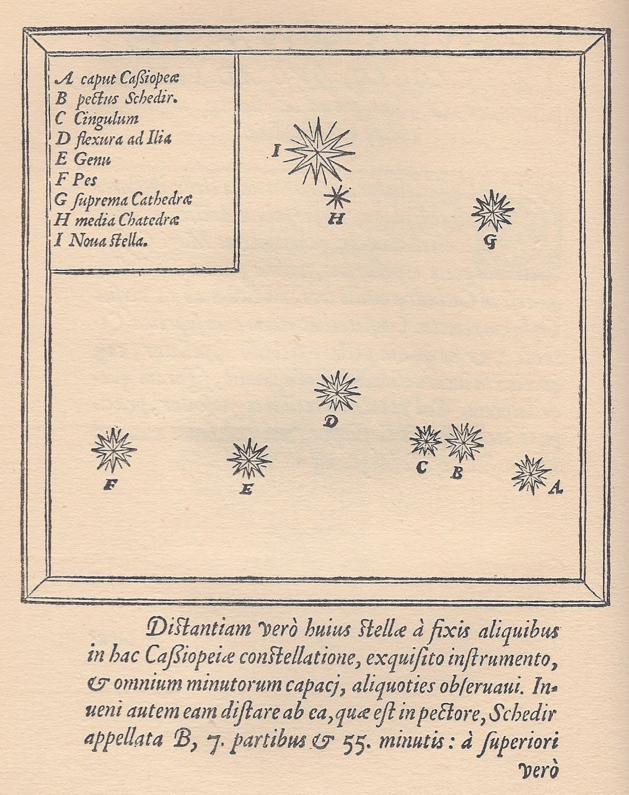

Grilla aplicada
La grilla es la herramienta de composición del wikitexto: cada hijo directo del contenedor es una celda, y los modificadores se suman como clases.
Dos columnas de texto
La Escuela de Arquitectura y Diseño de la Pontificia Universidad Católica de Valparaíso entiende el oficio como una pregunta que se renueva en cada obra. La observación —dibujar y anotar lo que se ve— es el punto de partida de todo proyecto, y la palabra poética abre el campo donde el acto arquitectónico tiene lugar.
La travesía es el viaje anual de cada taller por América: se parte con una obra por hacer y se vuelve con una obra hecha, levantada en común con quienes habitan el lugar. Lo que se construye es siempre más pequeño que lo que se aprende.
Tres columnas con imágenes


Cuatro y seis columnas
Tarjetas automáticas (cols-auto)
Asimétrica 1/3 + 2/3: imagen y texto

La travesía es el viaje anual de cada taller por América: se parte con una obra por hacer y se vuelve con una obra hecha, levantada en común con quienes habitan el lugar. Lo que se construye es siempre más pequeño que lo que se aprende.
Asimétrica 2/3 + 1/3: cuerpo y ficha
La Escuela de Arquitectura y Diseño de la Pontificia Universidad Católica de Valparaíso entiende el oficio como una pregunta que se renueva en cada obra. La observación —dibujar y anotar lo que se ve— es el punto de partida de todo proyecto, y la palabra poética abre el campo donde el acto arquitectónico tiene lugar.
Casiopea reúne esas obras, observaciones y escritos como una carpeta abierta: cada página se vincula con las demás por el hipertexto, y ninguna debería quedar huérfana, sin un camino que lleve hasta ella.
| Título | Hospedería del Errante |
|---|---|
| Lugar | Ciudad Abierta, Ritoque |
| Año | 1981–1995 |
| Autoría | Manuel Casanueva |
| Materia | Hormigón, madera, cobre |
| Estado | Construida |
Flujo vertical en tres columnas
Pila vertical (stack)
Separación por eje
Columnas pegadas y filas aireadas: gap-h-0 gap-v-l.
Botones en una grilla
Una secuencia en línea (varios botones) que MediaWiki envuelve en un solo párrafo: el skin la vuelve transparente y cada botón es una celda.
Grilla dentro de una banda de fondo
Punto de vista
A todo el campo (completa)
La grilla rompe el ancho de lectura y ocupa el campo entero, de borde a borde de la ventana.
Casiopea reúne esas obras, observaciones y escritos como una carpeta abierta: cada página se vincula con las demás por el hipertexto, y ninguna debería quedar huérfana, sin un camino que lleve hasta ella.